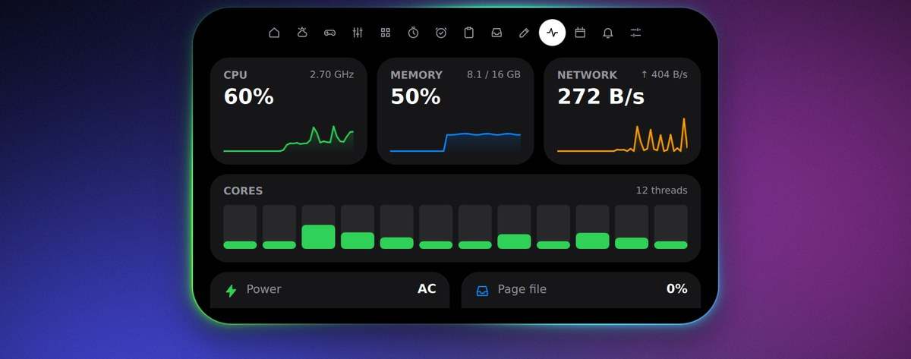
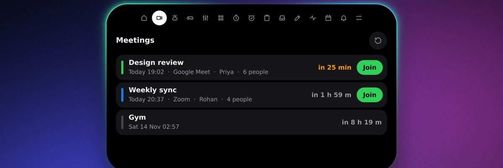
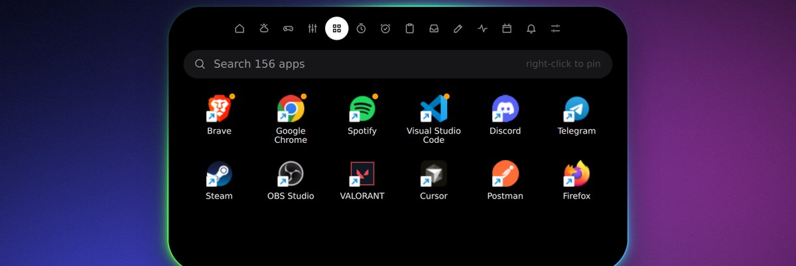

Screenshots
Looks at home on your desktop.






Music with synced lyrics, notifications, timers, clipboard history and live stats, all in one pill at the top of your screen. Hover to open. Leave and it's gone.
Island stays out of your way as a slim pill, then expands into a full control centre the moment you need it.
Album art, a live visualiser, controls and time-synced lyrics for Spotify and any media app. Hinglish lyrics for Punjabi, Hindi and Haryanvi songs.
Volume, brightness, track changes, USB devices, battery and messages slide in, then get out of your way.
Every copy is confirmed and kept. Pin what matters and search the rest.
Focus and break sessions stay visible in the pill, with a chime when time is up.
CPU, memory, GPU, network, drives and top processes at a glance.
A tiny HUD with real FPS, CPU, GPU, temperature, RAM and ping. Nothing is injected into games.
Switch audio devices, set volume and screen brightness without digging through Windows settings.
Your month, the weather, reminders and one-click join for Google Meet, Zoom and Teams.
About 0.2% CPU and 80 MB of RAM while idle. Smooth animations at your screen's refresh rate.



No Python, Git or developer tools needed. Island installs for your account without admin rights.
Open PowerShell and run this. It verifies the download before installing.
Run IslandSetup.exe and follow the steps. Compare its SHA-256 with SHA256SUMS.txt in the release if you like.
Island is not on the Microsoft Store or in WinGet yet. This page will link to them once they are published.
| Windows | Windows 10 version 1809 or later, or Windows 11 |
| Architecture | 64-bit (x64) |
| Disk space | About 200 MB |
| Updates | Built in. Island checks every 8 hours and installs verified updates when you say so. |
| Uninstall | Settings › Apps › Installed apps › Island › Uninstall. Your settings are kept unless you choose to remove them. |
The latest release notes appear here once a version is published.
Yes. Island is freeware: free on any number of your own PCs, for personal or commercial use.
Island releases are not code-signed yet, and new apps are flagged until they build a reputation. Choose More info, then Run anyway. To confirm the file is genuine, compare its SHA-256 with SHA256SUMS.txt in the release.
No. There are no analytics or telemetry. It only goes online for features you use: lyrics, weather, Google Calendar if you connect it, and update checks. Read the privacy policy.
No. Gaming mode shrinks Island to a tiny HUD, mutes non-essential pop-ups and reads FPS from Windows' own event tracing. It never injects code into games or touches anti-cheat.
Spotify, browsers, media players and any app that shows up in the Windows media controls.
Island checks for a new version at start-up and every 8 hours. When one is out, Settings › Updates shows the release notes and a Download and install button. The installer is verified before it runs and your settings are kept.
Settings › Apps › Installed apps › Island › Uninstall. The uninstaller asks whether to remove your settings too.